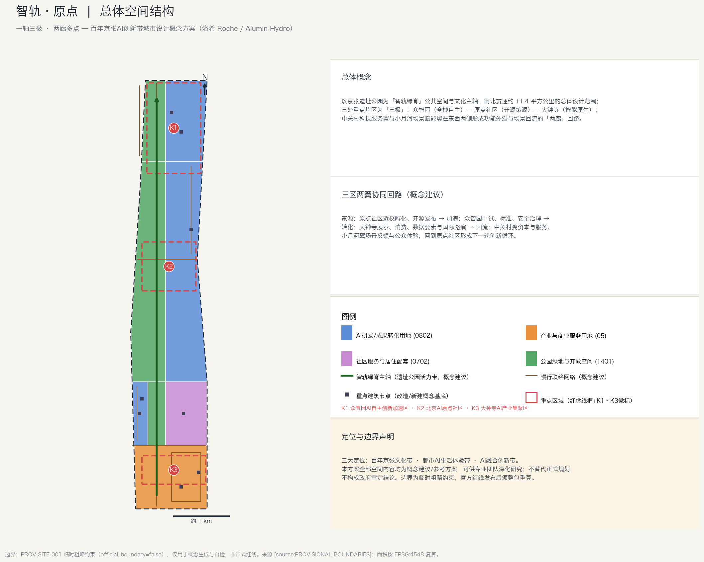
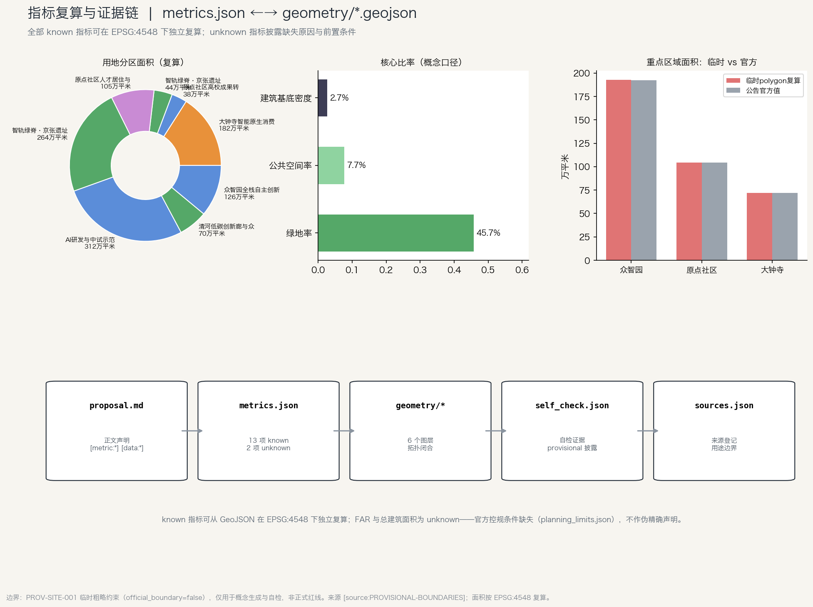
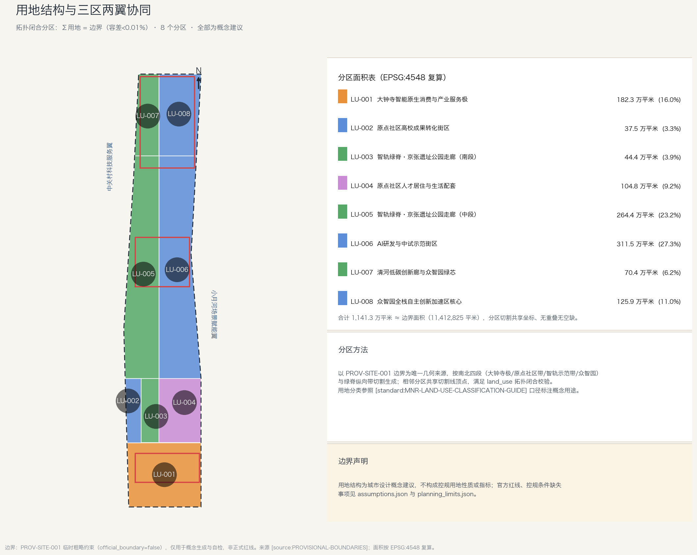
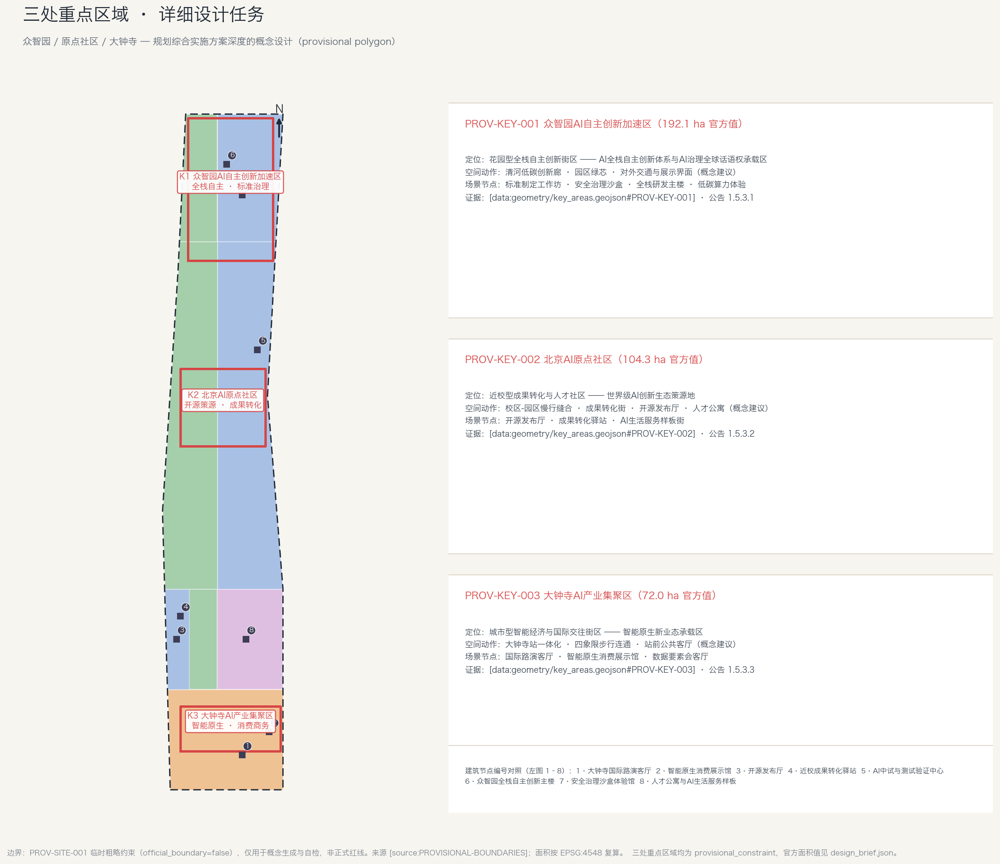
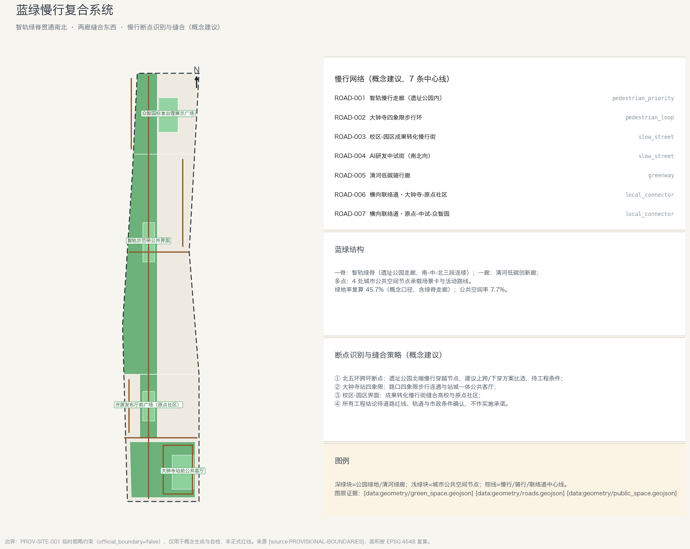

official_boundary=false，boundary_precision=provisional_rough），
不能作为正式红线、审批依据或精确面积依据；官方 polygon 发布后全部图层与指标须整包重算。
总览地图 · 总体概念
以京张遗址公园为「智轨绿脊」公共空间与文化主轴，南北贯通约 11.4 平方公里总体设计范围； 三处重点片区为「三极」：众智园（全栈自主）— 北京AI原点社区（开源策源）— 大钟寺（智能原生）； 中关村科技服务翼与小月河场景赋能翼构成东西「两廊」协同回路： 策源 → 加速 → 转化 → 回流。

核心指标（与 metrics.json 一致）· 自检状态
全部 known 指标可在 EPSG:4548 下从 GeoJSON 独立复算；unknown 指标披露缺失原因，不作伪精确声明。

用地分区（拓扑闭合）
8 个分区由临时边界按「南北四段 × 绿脊带」切割生成，相邻分区共享切割线顶点，无重叠无空缺（∑分区 = 边界，容差 < 0.01%）。

重点区域（详细设计任务）· 三层范围
K1 众智园AI自主创新加速区
- 定位：花园型全栈自主创新街区
- 场景：标准工作坊 · 安全治理沙盒 · 全栈研发主楼
- 官方面积口径：192.1 ha（临时 polygon 复算 192.9 ha）
K2 北京AI原点社区
- 定位：近校型成果转化与人才社区
- 场景：开源发布厅 · 成果转化驿站 · 人才公寓
- 官方面积口径：104.3 ha（临时 polygon 复算 104.3 ha）
K3 大钟寺AI产业集聚区
- 定位：智能原生经济与国际交往街区
- 场景：国际路演客厅 · 消费展示馆 · 数据要素会客厅
- 官方面积口径：72.0 ha（临时 polygon 复算 72.0 ha）

蓝绿公共空间 · 交通慢行复合系统
一脊（智轨绿脊）· 一廊（清河低碳创新廊）· 多点（4 处公共空间节点）+ 7 条慢行概念中心线； 断点缝合策略覆盖北五环跨环、大钟寺站四象限、校区-园区界面（工程结论待确认，不作实施承诺）。

AI 场景（12 卡 · 3 测试 · 5 画像）
12 张场景卡
开源发布厅 / 安全治理沙盒 / 端侧算力驿站 / AI慢行导航 / 国际路演客厅 / 清河低碳创新廊 / 近校成果转化街 / 数据要素会客厅 / AI生活服务样板街 / 京张文化AI导览 / 全球AI活动周路线 / 多语种城市服务 Copilot。
3 个产业测试验证场景
T1 自主模型开放测试场（众智园）· T2 智能体城市服务沙盒（大钟寺）· T3 慢行机器人共行试验段（绿脊指定段）。均为测试建议，隐私边界：数据最小化 · 可解释 · 人工复核 · 可申诉 · 可回滚。
任务覆盖（agent.1 – agent.6）
| 任务 | 响应要点 | 证据 |
|---|---|---|
| agent.1 总体概念 | 智轨·原点命名体系、Logo方向（人字轨双线意象）、三区两翼回路 | proposal §3.1 |
| agent.2 创新生态 | 6 全球案例、生态图谱、八要素机制建议 | proposal §3.2–3.3 |
| agent.3 场景城市 | 12 场景卡、3 测试场景、5 画像、隐私与人审边界 | proposal §7 |
| agent.4 公共空间 | 3 朝圣地标、贡献墙荣誉体系、组件库 | proposal §8 |
| agent.5 文化叙事 | 历史-创新-未来三层叙事、导视系统、国际传播文案 | proposal §9 |
| agent.6 活动运营 | 年度活动体系、开发者社区、场景开放机制、转化路径 | proposal §10 |
公告 1.3/1.4/1.5 与 agent.1–agent.6 的逐条覆盖见 compliance_matrix.json；标准响应见 standard_matrix.json；深度证据见 design_depth_matrix.json。
来源、假设 · 建筑 · 更新项目
建筑与更新项目
- 建筑：8 处概念基底（保留整治/改造/新建概念三类）
- 更新项目：JZ-01~JZ-08，三期分期实施（概念建议）
- 拆改留：方法示意，待权属与控规确认
主要来源
- 资格预审公告与智能体任务书（formal 可用）
- PROV-SITE-001 / PROV-KEY-001~003 临时边界（provisional-only）
- planning_limits.json（官方面积值与缺失控规登记）
- data/source_registry.json（用途边界）
关键假设与缺口
- 官方红线、重点区 polygon 缺失 → 全部图层为临时概念
- 控规指标（FAR/高度/密度）缺失 → 指标 unknown
- 权属、市政、文保条件缺失 → 拆改留仅方法示意
- 官方数据到达后整包重算（脚本可复跑）
自检：self_check_submission.py / participant_preflight.py 结果以仓库最新运行为准；
本页所示指标与 metrics.json 一致（data-metric 标记可机读比对）。